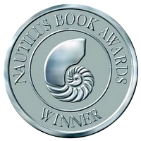
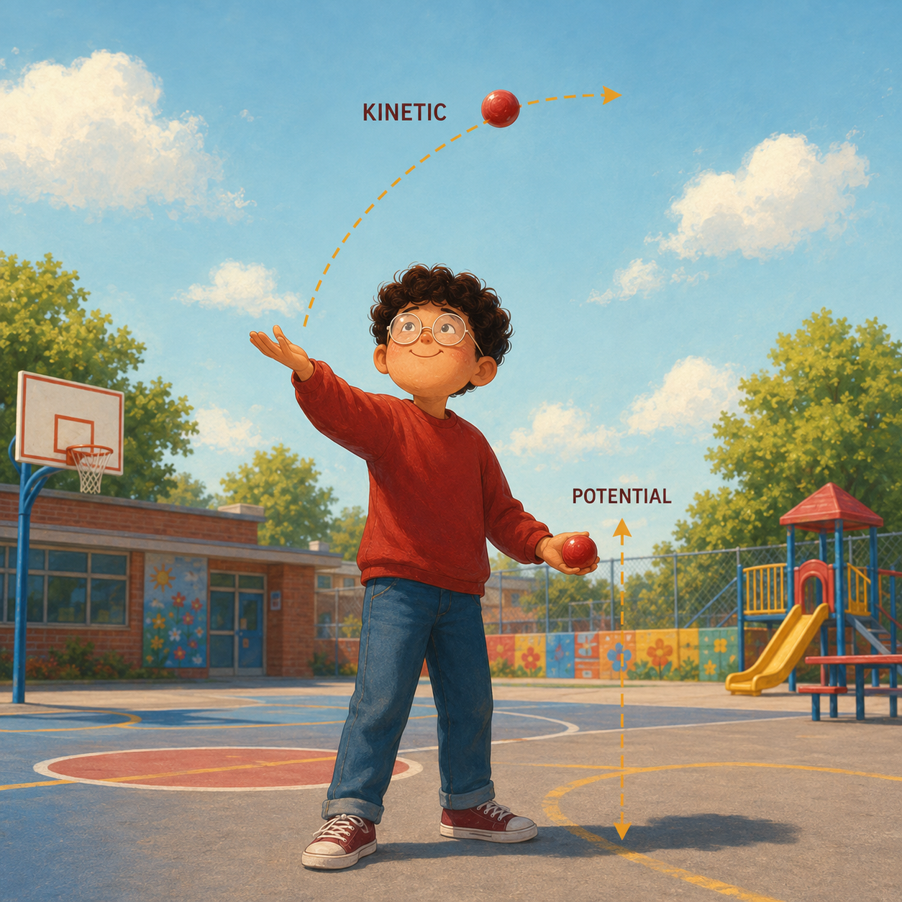
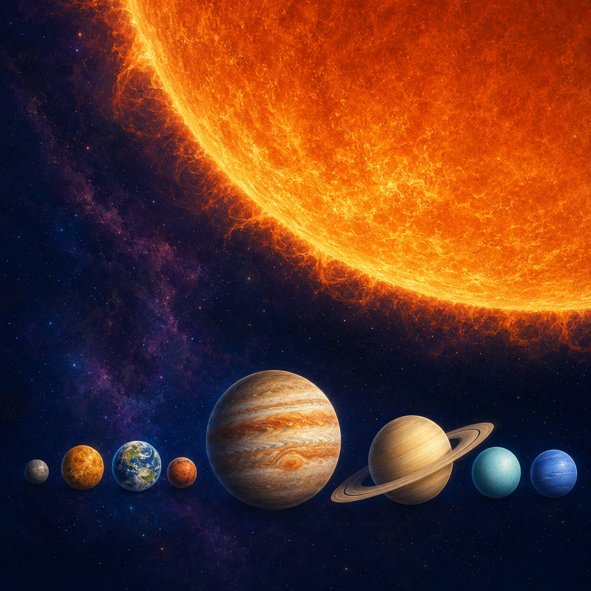
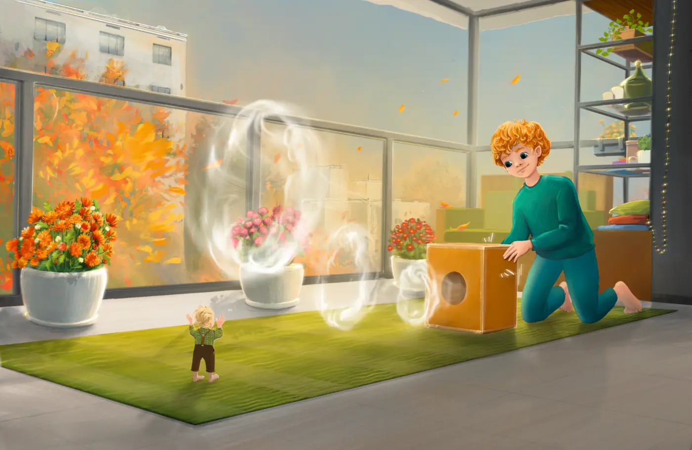
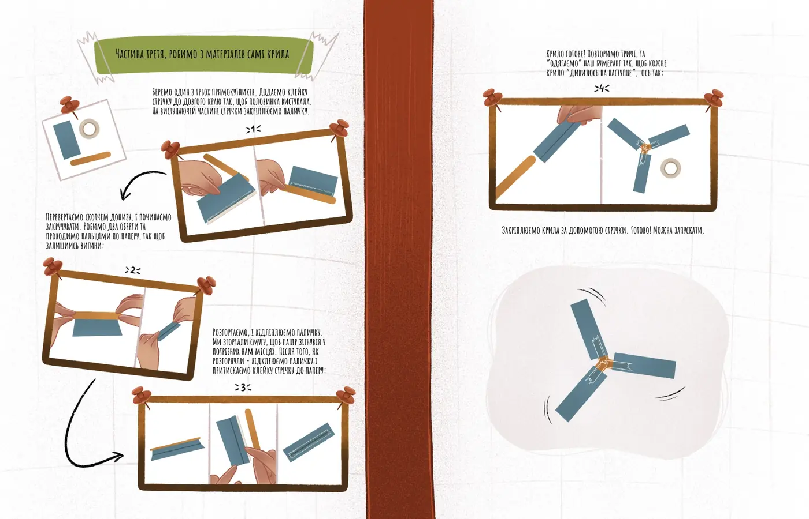

Public Outreach
Public Outreach
Physics writing, books, and established public-facing projects. This page documents an established body of educational work, including my published book, award-recognized science communication, visual explanations, and experimental concepts. Further releases are currently paused while I focus on my core professional work. The project may resume through an appropriate publisher, educator, or institutional collaboration.
Toys or Physics?
Toys or Physics?: Explaining Physics Through Toys is a public-facing physics book that explains physical ideas through familiar toys, games, and playful examples. The goal is to make physics feel discoverable: not as a set of formulas first, but as a way of noticing structure in ordinary objects.
Book
Toys or Physics?: Explaining Physics Through Toys
- Author
- Oles Matsyshyn
- Illustrations
- Kateryna Martyniuk
- Publisher
- World Scientific Education
- DOI
- 10.1142/13547

Toys or Physics?: Explaining Physics Through Toys was awarded the 2024 Nautilus Silver Award for "Middle Grade Non-Fiction, Ages 8-12."
Acknowledgements
I am especially grateful to Roderich Moessner and to the Max Planck Institute for the Physics of Complex Systems (MPI-PKS) for their encouragement and financial support.
Discussions
Simple objects can reveal surprisingly deep ideas. These four visual explanations offer the short version. The book develops the physics in greater detail.

There is a numerical quantity which does not change when something happens.
Energy is the capacity to change.
01 / Energy
1. Superball: Where does the bounce come from?
Everyone already has some intuition for energy. We say that we have little energy, that something energetic moves quickly, or that an object contains enough energy to make something happen. These everyday meanings are not exact physics definitions, but they are a useful place to begin.
A bouncing superball makes energy visible. When the ball is high above the floor, it has gravitational potential energy: energy because of where it is. As the ball falls, this height-energy turns into kinetic energy: energy of motion. The faster the ball moves, the more kinetic energy it has.
When the ball hits the floor, it briefly changes shape. For a tiny moment, some of the motion is stored as elastic energy inside the squeezed ball. Then the ball returns to its round shape, and that stored energy becomes motion again.
On the way up, kinetic energy turns back into gravitational potential energy. A real ball does not bounce back to exactly the same height, because some energy spreads into sound, heat, and tiny vibrations inside the ball. The energy has not disappeared; it has become harder to use.
What to notice: Height-energy becomes speed, speed becomes squeezing, and squeezing becomes speed again.
Explore the full discussion in the bookComments are reviewed before publication.
What really matters anyway is not how we define time, but how we measure it.
Energy is the capacity for change; time is the framework in which change unfolds. The two are intimately connected.
02 / Time
2. Yo-yo: How can motion become a clock?
Measuring time with repeated motion
A yo-yo is more than a toy that goes down and up. It can also teach us how to measure time.
A laboratory version of this toy is called a Maxwell pendulum. It uses a wheel and strings, so the motion is especially regular and easy to study. As the wheel moves down, some gravitational potential energy becomes motion of the wheel's center, and some becomes rotational energy: energy of spinning. In simple words, kinetic energy tells us how fast something moves, and rotational energy tells us how fast it spins.
The important idea here is not only the energy. It is repetition. A clock does not need to know what time is. It only needs something that repeats reliably. One down-and-up motion is one cycle. Count the cycles, and you have a way to measure how much time has passed.
What to notice: Repeated motion can become a clock tick. One cycle, two cycles, three cycles: this is already a way to measure time.
Explore the full discussion in the bookChapter discussion
Questions, observations, and small experiments inspired by this chapter are welcome.
Comments are reviewed before publication.
A solid heavier than a fluid will, if placed in it, descend to the bottom.
03 / Buoyancy
Bonus chapter
3. Cartesian Diver: How can pressure make something sink?
Take an empty plastic bottle, close it, and try to squeeze it. You can do it with your hands because air is fairly easy to squeeze. A Cartesian diver uses this to submerge. Inside the diver there is a small pocket of air. When you squeeze the bottle, pressure travels through the water and squeezes this air pocket. A little more water enters the diver.
The diver is now heavier, but almost the same size. Its average density increases: more mass is packed into nearly the same volume. The capsule itself is usually denser than water, so it needs enough trapped air to help it float. When the air pocket becomes smaller, the upward buoyant force can no longer hold the diver up, and it sinks.
Release the bottle, and the air pocket expands again. Some water leaves the diver, its average density decreases, and buoyancy lifts it back up.
This is not only a toy. It is the same basic idea behind controlling floating and sinking. Submarines change how much water and air they carry so they can dive, rise, or stay at a chosen depth.
What to notice: Squeezing air changes density. Changing density changes whether something floats or sinks.
Read the full bonus chapterChapter discussion
Questions, observations, and small experiments inspired by this chapter are welcome.
Comments are reviewed before publication.

The Earth is a very small stage in a vast cosmic arena.
04 / Scale
Bonus chapter
4. Solar System Scale: How large is our place?
The difficulty of understanding the solar system is not learning the names of its objects. It is comprehending the distances between them.
Imagine that Earth is a sphere only 1 centimetre across. At this scale, the Moon is about 30 centimetres away, the Sun is about 1.1 metres across and approximately 117 metres away, Neptune is roughly 3.5 kilometres away, and the nearest star is still more than 30,000 kilometres away.
The solar system is not a crowded arrangement of large objects. It is an enormous volume of almost entirely empty space.
What to notice: Reducing the planets to familiar sizes does not make the distances small.
Read the full bonus chapterChapter discussion
Questions, observations, and small experiments inspired by this chapter are welcome.
Comments are reviewed before publication.
Unreleased project
The Young Experimentalist
An experimental journal of stories, toys, and observations.
The test of all knowledge is experiment. Experiment is the sole judge of scientific truth.
Each issue begins with a story and ends with something real to make and investigate.
The journal does not begin by explaining the physics. Instead, it gives the reader a toy, a way to build it, and questions worth exploring. The aim is to make something, launch it, observe what happens, and report as many details as possible.
There are no wrong observations. A ring that breaks apart, a boomerang that turns unexpectedly, or a small construction change that produces a different result can all reveal something useful. What matters is looking carefully and reporting honestly.
The Young Experimentalist Journal is a developed concept for a future educational series. New issues are currently paused and may be produced through an appropriate publishing or educational partnership.
MAKE → LAUNCH → OBSERVE → SHARE
Issue 01
Developed concept
Smoke Rings
How far can a shape made from air travel?
Build a simple launcher and send visible mist rings across the room. Some rings remain clear and travel surprisingly far; others wobble, widen, split apart, or disappear almost immediately.
Change one condition at a time and observe what follows. What changes with the opening, the strength of the launch, the distance, or the surrounding air? Can one ring pass through another? What happens near an obstacle?
The story provides the equipment and the first questions. The rest belongs to the experimenter.


Issue 02
Developed concept
The Three-Wing Boomerang
Can three simple wooden pieces find their way back?
Three lightweight wooden pieces are combined into a three-wing boomerang and taken outside for a sequence of experimental launches.
Does it climb or remain level? Does it turn smoothly, fall early, or pass behind the launcher? How do balance, launch angle, wind, and small differences in construction alter its path?
A returning flight is exciting, but it is not the only useful result. Every flight has a path that can be observed, compared, and reported.
Future issues will invite readers to share photographs, observations, construction variations, and questions. Selected contributions may be published here, with permission, and may inspire answers or later experiments.
Have a question?
Send a short question about one of these demonstrations. Selected questions and answers may later be added to this page.
Support and collaboration
This project is developed independently in my free time and at my own expense. If you are interested in supporting its development or discussing a collaboration, contact me at oles.matsyshyn@gmail.com. External funding has not yet been sought, so I am not currently able to offer paid positions.
Rights and Attribution
Toys or Physics?: Explaining Physics Through Toys was published by World Scientific Education. Rights to the published book are governed by the publisher's terms and agreements. Unless otherwise stated, the original website notes, discussion text, outreach summaries, animations, and presentation material on this page are © Oles Matsyshyn. AI-generated or AI-assisted illustrations should be understood as illustrative rather than documentary.
Chapter discussion
Questions, observations, and small experiments inspired by this chapter are welcome.